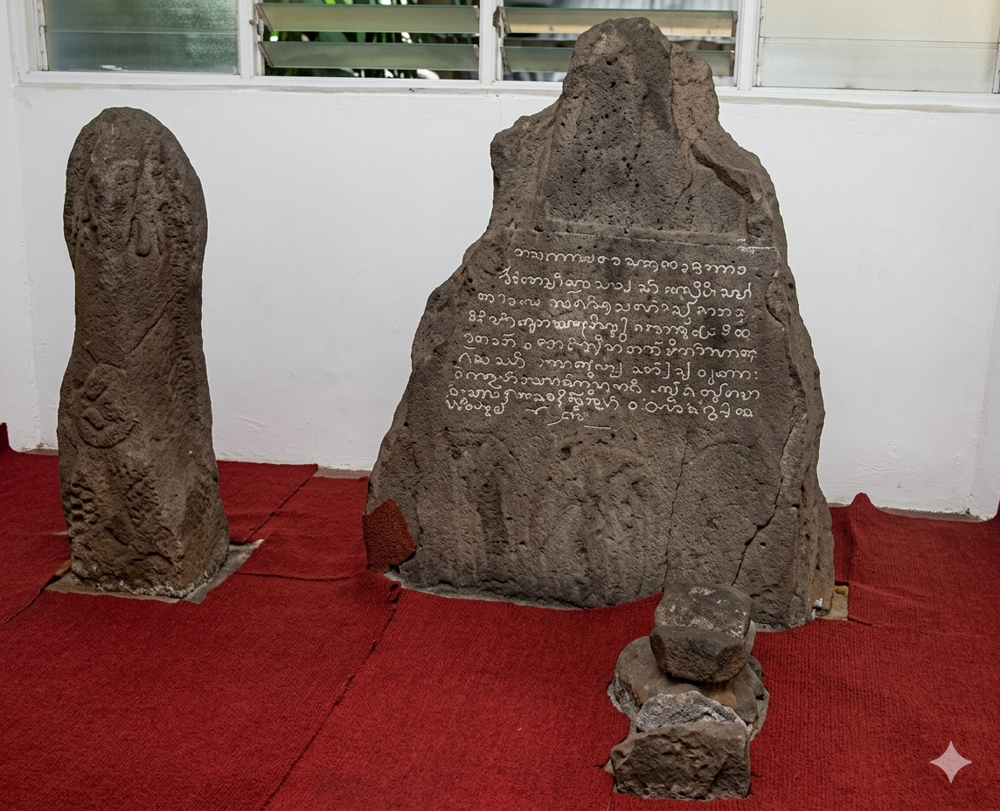
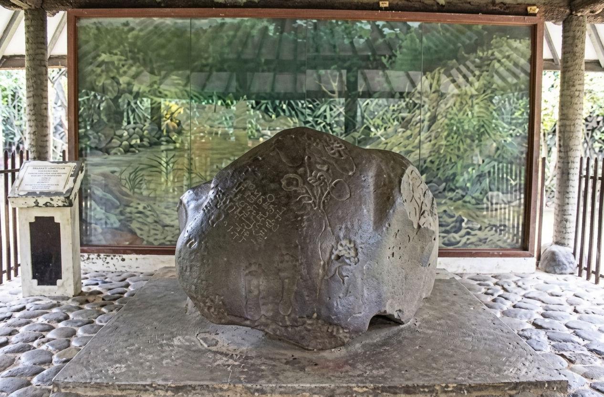
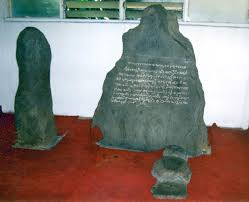

Peninggalan Masa Kerajaan (Hindu-Buddha/Sunda)
Periode ini menandai zaman keemasan kerajaan-kerajaan besar seperti Tarumanegara dan Pajajaran di wilayah Bogor.
Periode ini menandai zaman keemasan kerajaan-kerajaan besar seperti Tarumanegara dan Pajajaran di wilayah Bogor.
📖 Penjelasan:
Ini adalah kompleks situs bersejarah yang sangat penting. Prasasti utamanya terbuat dari batu andesit dan berisi pengakuan serta perintah dari Sri Baduga Maharaja (Prabu Siliwangi) yang memerintah Kerajaan Sunda di Pakuan Pajajaran . Aksara yang digunakan adalah Sunda Kuno dan Jawa Kuno (Kawi) dengan angka tahun 1455 Saka (1533 M) . Di lokasi yang sama, Anda juga dapat melihat batu berukir tapak kaki, batu lingga (simbol kesuburan), serta batu berlubang yang merupakan peninggalan bersejarah lainnya.
📍Lokasi: Jalan Batutulis, Kelurahan Batutulis, Bogor Selatan

📖 Penjelasan:
Prasasti Ciaruteun merupakan salah satu bukti paling penting keberadaan Kerajaan Tarumanegara, kerajaan bercorak Hindu tertua di Jawa Barat. Prasasti ini ditulis di atas batu alam yang besar (megalitik) dengan menggunakan aksara Pallawa dan bahasa Sanskerta.
📍Lokasi: Tepi Sungai Ciaruteun, Kelurahan Pasir Mulya, Kecamatan Bogor Barat, Kota Bogor.

📖 Penjelasan:
Prasasti ini ditemukan pada abad ke-19 saat pembukaan perkebunan kopi . Keunikan dari prasasti ini bukan terletak pada aksara, melainkan pada pahatan gambar sepasang telapak kaki gajah yang diidentifikasi sebagai kaki Gajah Airawata (kendaraan Dewa Wisnu) . Karena itu, prasasti ini juga populer dengan sebutan Prasasti Telapak Gajah. Meskipun pernah hilang dan ditemukan kembali dalam kondisi pecah, prasasti ini menjadi bukti penting pengaruh Hindu di wilayah Bogor pada abad ke-5 Masehi.
📍Lokasi: Kampung Muara Hilir, Kecamatan Cibungbulang, Kabupaten Bogor.

Periode ini menyimpan cerita heroik perjuangan rakyat Bogor, dari masa pendudukan Jepang hingga mempertahankan kemerdekaan.
📖 Penjelasan:
Bangunan ini dulunya adalah markas tentara Belanda (KNIL) yang kemudian diambil alih Jepang pada tahun 1943 untuk dijadikan pusat pendidikan perwira PETA . PETA dilatih untuk mempertahankan tanah air dari Sekutu, namun justru menjadi kawah candradimuka bagi para perwira yang kemudian menjadi cikal bakal Tentara Nasional Indonesia (TNI) . Di museum ini, Anda dapat melihat diorama pembentukan PETA, pemberontakan PETA di Blitar, koleksi senjata, seragam, dan foto-foto dokumentasi .
📍Lokasi: Jalan Jenderal Sudirman No. 35, Kota Bogor
📖 Penjelasan:
Bunker-bunker ini dibangun sekitar tahun 1939-1941 oleh pemerintah kolonial Belanda . Fungsinya adalah sebagai benteng pertahanan dan pos pengintaian untuk melindungi tangsi militer Belanda (yang kini menjadi Markas Paspampres) dari serangan Jepang . Bunker Gumati (di area Gumati Cafe) dan Bunker Mandiri (di lahan milik Bank Mandiri) memiliki struktur beton tebal dengan lubang intai (lubang untuk senapan) yang menghadap ke jalur kereta api . Penemuannya cukup menarik, yaitu ketika proyek pembangunan berlangsung dan ekskavator tidak sanggup menghancurkan struktur kokoh bangunan ini .
📍Lokasi: Bunker Gumati & Bunker Mandiri (Peninggalan Kolonial Belanda)

📖 Penjelasan:
Museum ini didirikan untuk mengabadikan semangat juang rakyat Bogor, khususnya sekitar tahun 1945-1949 . Koleksi utamanya adalah berbagai macam senjata api rampasan dari tentara Jepang dan Inggris, seperti senapan Jukikanju, serta bambu runcing . Yang paling unik adalah koleksi pakaian pejuang yang masih berlumuran noda darah asli . Museum ini juga memiliki beberapa diorama yang menggambarkan pertempuran sengit di sekitar Bogor, seperti Pertempuran Bojong Kokosan dan Pertempuran Maseng .
📍Lokasi: Jalan Merdeka No. 56, Kelurahan Cibogor, Bogor Tengah